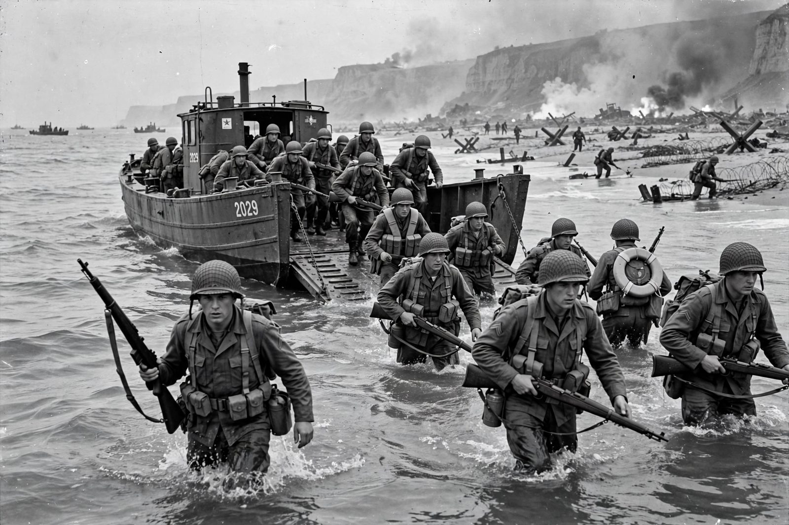

World War II
From Wikipedia, the free encyclopedia

World War II (1939–1945) was a global conflict between the Axis powers — Nazi Germany, Italy and Japan — and the Allies, led by the Soviet Union, the United States, the United Kingdom and China. It was the deadliest war in history, with an estimated 70–85 million deaths, and it ended with the division of Europe, the founding of the United Nations and the start of the Cold War.
Origins and outbreak
The war grew out of unresolved grievances from the First World War, the Great Depression and the rise of fascism. Germany's invasion of Poland on 1 September 1939 brought British and French declarations of war; in Asia, Japan had invaded Manchuria in 1931 and China in 1937. By 1941 the conflict was fully global: Germany invaded the Soviet Union in June (Operation Barbarossa), and Japan's attack on Pearl Harbor in December brought the United States in.
Course of the war
The Axis expanded rapidly until turning points in 1942–43: Midway, El Alamein and Stalingrad. The Allies invaded Italy in 1943 and Normandy on D-Day, 6 June 1944; Germany surrendered in May 1945 after the fall of Berlin and Hitler's suicide. In the Pacific, island-hopping, the Iwo Jima and Okinawa campaigns preceded the atomic bombings of Hiroshima and Nagasaki; Japan surrendered on 2 September 1945.
Atrocities and aftermath
The war included The Holocaust, mass killings of civilians in occupied Europe and Asia (including the Nanjing Massacre), strategic bombing of cities and forced labour on a vast scale. Its settlement redrew borders, displaced millions, split Germany and Korea, accelerated decolonisation, and produced the Nuremberg and Tokyo war-crimes trials, the Bretton Woods system and the UN.